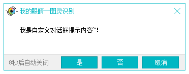

| 命令名称 | UI_MsgBox 弹出对话框 |
| 命令功能 | 在屏幕中间弹出提示对话框 |
| 语法格式 | ret = TURING.UI_MsgBox(Content, Title, iStyle, Timeout, x, y) |
| 参数说明 |
Content：字符串型，提示内容 Title：字符串型，窗口标题 iStyle：整数型，可选，默认1，对话框样式(1确定，2是否，3中止重试忽略，4是否取消，5重试取消，6确定取消) Timeout：整数型，可选，默认0，时间等待（单位秒） x：整数型，可选，默认居中-1，屏幕X坐标 y：整数型，可选，默认居中-1，屏幕Y坐标 |
| 返回值 | ret：字符串型，按钮编号(1确定，2取消，3中止，4重试，5忽略，6是，7否) |
| 按键精灵 |
复制代码
内容 = "我是自定义对话框提示内容~！" 标题 = "我的眼睛--图灵识别" 样式 = 4 '1确定，2是否，3中止重试忽略，4是否取消，5重试取消，6确定取消 超时 = 10 '单位（秒） 返回值 = TURING.UI_MsgBox(内容, 标题, 样式, 超时) TracePrint 返回值 |
| 界面效果 |  |